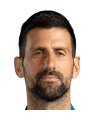

西班牙
· 单打Singles
返回排名Back to rankings →
卡洛斯·阿尔卡拉斯·加菲亚Carlos Alcaraz
27–42026 胜负2026 W–L
27生涯冠军Career titles
398–96生涯胜负Career W–L
80.6%生涯胜率Career win rate
8低级别冠军Lower-tier titles
No.1最高排名Career high
分赛季战绩Record by season
| 赛季Season | 场次Matches | 胜W | 负L | 胜率Win % |
|---|---|---|---|---|
| 2026 | 31 | 27 | 4 | 87.1% |
| 2025 | 84 | 73 | 11 | 86.9% |
| 2024 | 71 | 57 | 14 | 80.3% |
| 2023 | 80 | 68 | 12 | 85.0% |
| 2022 | 74 | 57 | 17 | 77.0% |
| 2021 | 67 | 48 | 19 | 71.6% |
| 2020 | 51 | 44 | 7 | 86.3% |
| 2019 | 28 | 18 | 10 | 64.3% |
| 2018 | 8 | 6 | 2 | 75.0% |
生涯场地战绩Career record by surface
胜负 / 胜率W–L / win rate硬地Hard146–3481.1%
红土Clay174–3782.5%
草地Grass35–685.4%
室内Indoors38–1867.9%
赛季冠军走势Titles by season
主巡回赛冠军main-tour titles冠军记录Titles by season
主巡回赛冠军main-tour titles20262
20258
20244
20236
20225
20212
20200
20190
对现役前 30 的交手战绩Record against the current top 30
已收录赛果stored results
诺瓦克·德约科维奇Novak DjokovicSerbiaNo.121–0